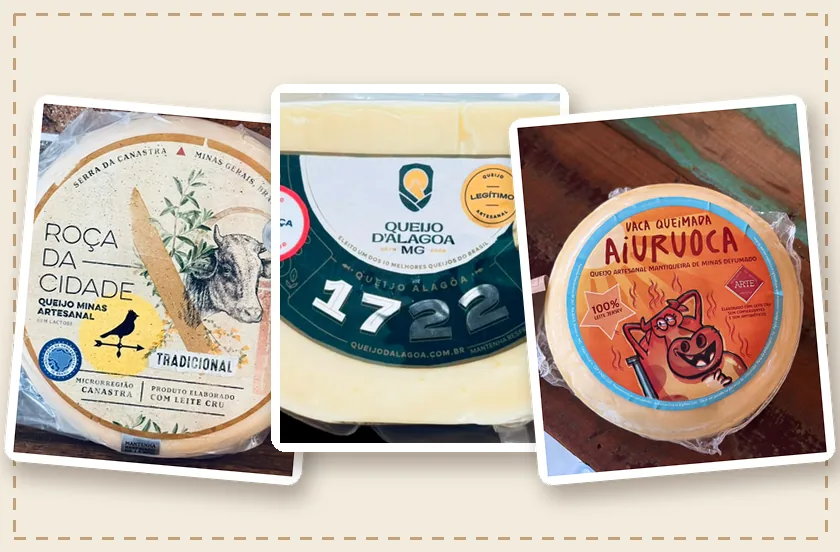
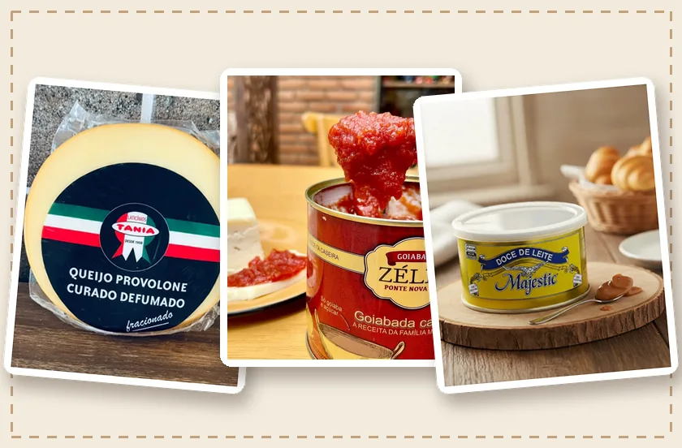
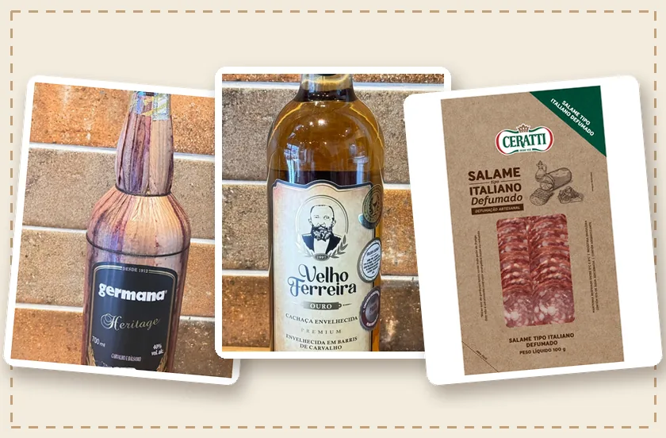
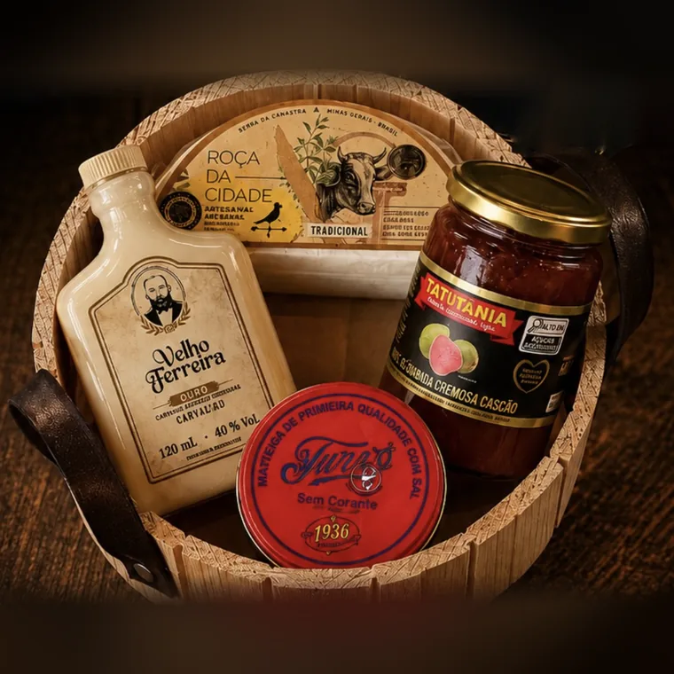
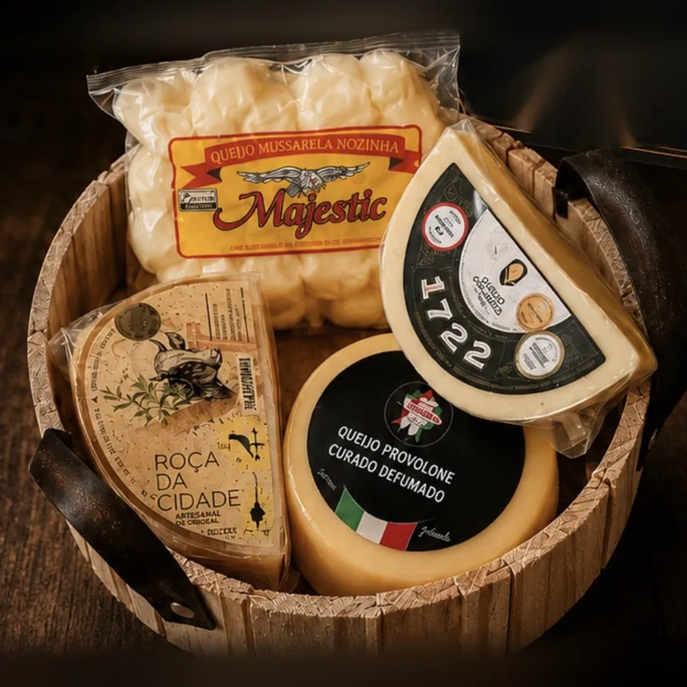
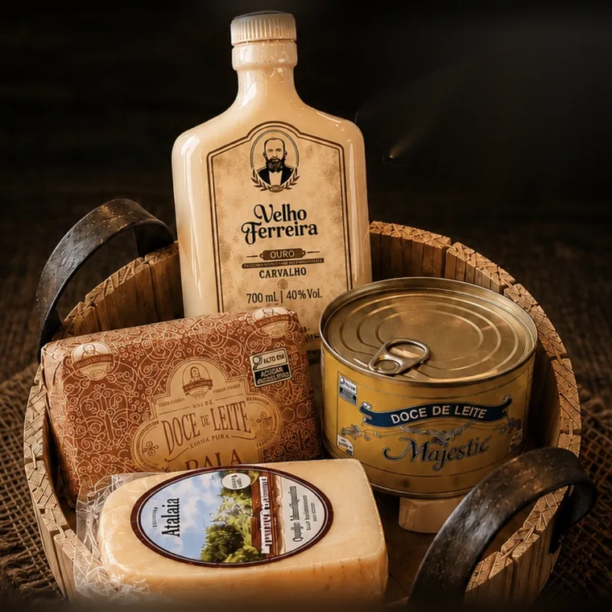
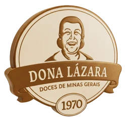
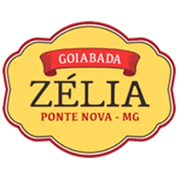
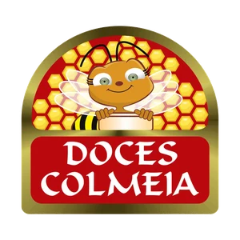
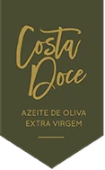

Queijos, doces mineiros, cachaças e azeites escolhidos um a um. Prove no balcão, peça pelo iFood ou receba em casa pelo Mercado Livre.
Com pressa, peça no app e chega na hora. Sem pressa, o Mercado Livre manda para o Brasil inteiro. Com tempo, venha provar.
Doces, queijos, geleias, azeites, cafés e cachaças de produtores que a gente escolheu a dedo. Para pedir qualquer produto, chame no WhatsApp ou venha provar na loja. As lojas online estão logo abaixo. Doce bão demais da conta.
Prefere comprar online? Visite nossas lojas:
Queijo pede balcão. Passa aqui para provar esse trem.

Provolone, queijos de Minas e opções para o dia a dia e para ocasião especial. Prove no balcão antes de escolher.

A gente indica, você monta em casa. Queijo, goiabada, doce de leite, salame e uma cachaça boa combinam bem. Pergunte no balcão ou chame no WhatsApp que a gente sugere a combinação.

Cachaça de alambique, salames e embutidos para completar a mesa.
Três caixas com cara de interior. Retire na loja, peça entrega na região ou receba o Kit Mimo em qualquer lugar do Brasil.

Uma seleção especial que combina queijo artesanal, doce, cachaça e muito sabor para criar momentos inesquecíveis em família.

Uma seleção especial de queijos premium, perfeita para homenagear quem sempre esteve ao seu lado com carinho, dedicação e grandes ensinamentos.

Surpreenda com o kit Queijinho, Docinho e Cachacinha, uma combinação especial que reúne tradição, qualidade e muito carinho em um único presente.
A partir de 10 kits, com cartão da sua empresa e entrega no escritório. Pedidos até 15/12.
Doces de fábricas pequenas, muitas de família, que você encontrava só na estrada.




Endereço: Rua Cantagalo, 214, Vila Gomes Cardim (Tatuapé), São Paulo, SP, 03319-000
Horário: aberto até as 19h
Contato: WhatsApp (11) 92146-1891
Deixe sua avaliação no Google. É assim que o vizinho descobre a loja.
Queijo novo, doce que acabou de chegar e os kits de Natal. Sem enxurrada de mensagem.
Chame no WhatsApp e peça para entrar na lista. A gente avisa de lote novo, doce que chegou e kits de Natal.
Receber novidades no WhatsApp